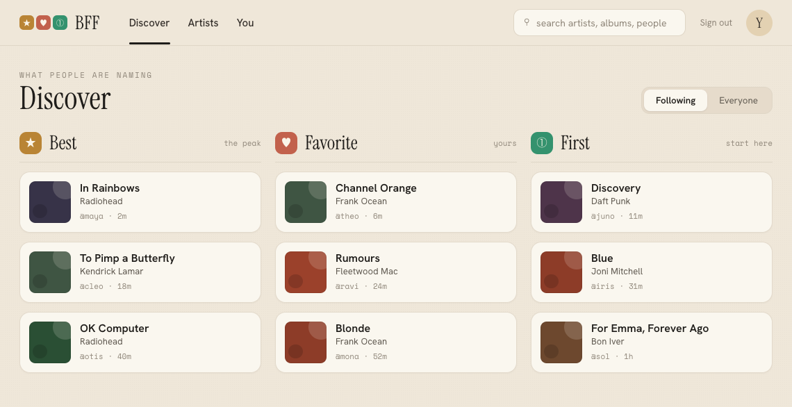

BFF
Three albums for every artist.
Best Favorite First is a way to tag a catalog. For any artist you keep one peak, one personal favorite, and one album you would hand a newcomer. Discover shows what the people you follow are naming, and your profile keeps a trio for each artist.

-
Best
The album you would call their peak.
-
Favorite
The one you actually reach for.
-
First
Where you would send a newcomer.
Sign in with a Bluesky handle, or any AT Protocol server. Each pick is stored in your own account.